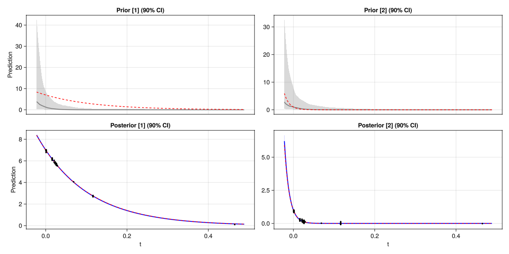
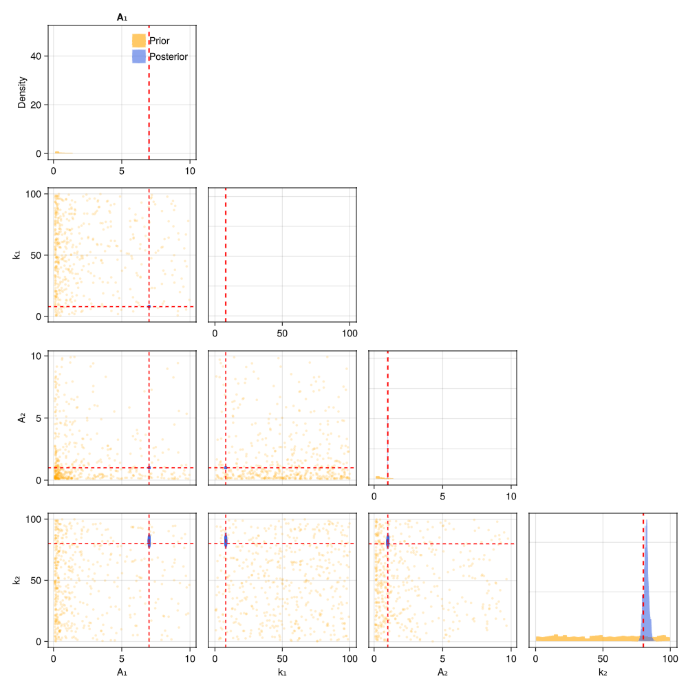

Vector Observations
When each measurement returns multiple values simultaneously — for example, two spectral channels or two decays observed in parallel — the model is vector-valued. OptimalDesign.jl handles this naturally: the Jacobian becomes a matrix, and the FIM accumulates information from all outputs.
The model
Two exponential decays observed simultaneously at time $t$:
\[\mathbf{y} = \begin{bmatrix} A_1 \exp(-k_1 \, t) \\ A_2 \exp(-k_2 \, t) \end{bmatrix} + \boldsymbol{\varepsilon}\]
Four parameters $(A_1, k_1, A_2, k_2)$, interest in both rates $(k_1, k_2)$.
using OptimalDesign
using CairoMakie
using ComponentArrays
using Distributions
function model(θ, x)
[θ.A₁ * exp(-θ.k₁ * x.t),
θ.A₂ * exp(-θ.k₂ * x.t)]
end
θ_true = ComponentArray(A₁ = 7.0, k₁ = 8.0, A₂ = 1.0, k₂ = 80.0)
σ = 0.05
acquire(x) = model(θ_true, x) .+ σ .* randn(2)Defining the design problem
The key difference from a scalar model: model returns a vector and sigma must return a vector of matching length, giving the noise standard deviation for each output component.
We also add a cost function — longer measurements cost more. The budget keyword (below) will determine how many measurements to make.
prob = DesignProblem(
model,
parameters = (
A₁ = LogUniform(0.1, 10), k₁ = Uniform(0.1, 100),
A₂ = LogUniform(0.1, 10), k₂ = Uniform(0.1, 100)),
transformation = select(:k₁, :k₂),
sigma = Returns([σ, σ]),
cost = x -> x.t + 1,
)
candidates = candidate_grid(t = range(0.001, 0.5, length = 200))Computing the design
With budget, the number of measurements is determined automatically from the per-measurement costs — no need to specify n explicitly. The design must balance information for the fast decay (short times) and the slow decay (longer times).
prior = Particles(prob, 1000)
ξ = design(prob, candidates, prior; budget = 100.0)ExperimentalDesign: 97 measurements at 9 support points
t=0.001 ×23 ███████████████████████
t=0.016 ×19 ███████████████████
t=0.0211 × 4 ████
t=0.0236 ×14 ██████████████
t=0.0261 ×26 ██████████████████████████
t=0.0286 × 2 ██
t=0.0687 × 1 █
t=0.1163 × 7 ███████
t=0.4649 × 1 █
Running the experiment
result = run_batch(ξ, prob, prior, acquire)Credible bands
For vector models, plot_credible_bands automatically creates one column per output component:
plot_credible_bands(prob, result; truth = θ_true)
Corner plots
With four parameters, the corner plot is a 4×4 grid. Because the two decays share no parameters, the off-diagonal blocks should show approximate independence — the posterior factorises:
plot_corner(result; truth = θ_true)